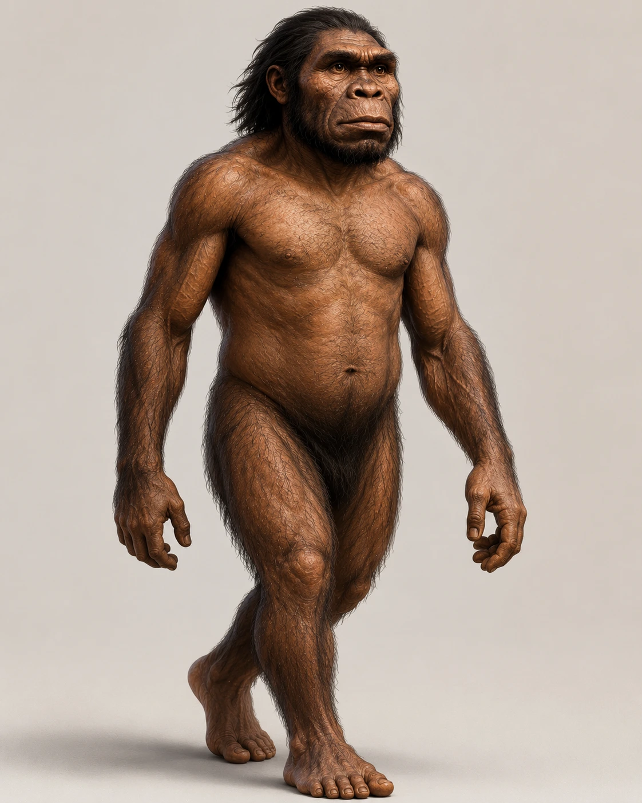

Pelajari salah satu manusia purba tertua yang pernah ditemukan di Indonesia.

Meganthropus paleojavanicus merupakan salah satu manusia purba yang fosilnya ditemukan di Situs Sangiran, Jawa Tengah. Fosil ini memiliki ciri rahang yang sangat besar, tulang pipi tebal, serta tubuh yang diperkirakan lebih kekar dibandingkan manusia purba lainnya.